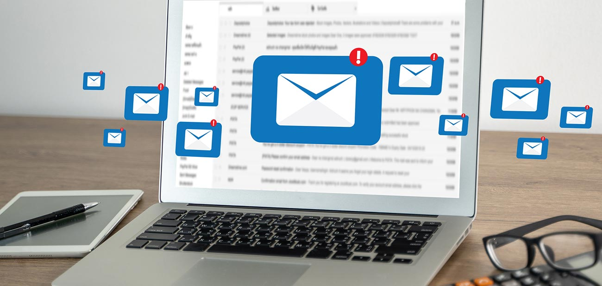

Electronic mail, commonly shortened to “email,” is a communication method that uses electronic devices to deliver messages across computer networks. "Email" refers to both the delivery system and individual messages that are sent and received. Email has existed in some form since the 1970s, when programmer Ray Tomlinson created a way to transmit messages between computer systems on the Advanced Research Projects Agency Network (ARPANET). Modern forms of email became available for widespread public use with the development of email client software (e.g. Outlook) and web browsers, the latter of which enables users to send and receive messages over the Internet using web-based email clients (e.g. Gmail). Today, email is one of the most popular methods of digital communication. Its prevalence and security vulnerabilities also make it an appealing vehicle for cyber attacks like phishing, domain spoofing, and business email compromise (BEC).
What is an email address? An email address is a unique string of characters that identifies an email account, or ‘mailbox,’ where messages can be sent and received. Email addresses are formatted in three distinct parts: a local-part, an “@” symbol, and a domain. For example, in the email address employee@example.com, “employee” denotes the local-part and “example.com” denotes the domain. Imagine addressing a letter: the domain signifies the city where the recipient lives, while the local-part specifies the street and house number at which the letter can be received.
LinkedIn is a social networking site designed specifically for the business community. The goal of the site is to enable registered members to establish and document networks of people they know and trust professionally. LinkedIn is also a resource for professionals to find jobs, research companies, and get news about their industry and business connections. LinkedIn gathers data across LinkedIn profiles to provide policymakers, employers, workers and educators with data-driven insight into patterns that help align workforce supply with demand worldwide. Such patterns include when people generally look for the next step in their career, work migration trends in specific geographical locations, skills gaps in specific industries and what cities are "stickiest," i.e., areas that employees are less likely to move away from.